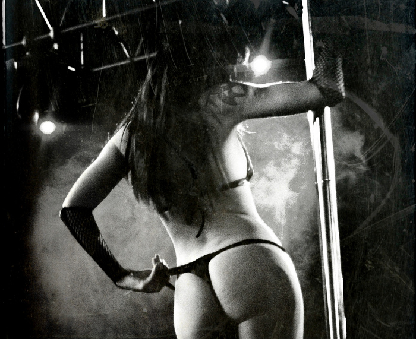

Barras de proceso.

Hoy quiero platicar de las barras pero no de las barras que estas penzando ':-0 mas bien de las barras de proceso CSS.
Las barras de proceso, son una forma grafica de la representación de datos, estos datos en su mayoria se suelen representar de forma porcentual.
Por ejemplo si en un sistema tenemos 10 usuarios de los cuales 5 son administradores entonces tenemos un 50% de usuarios administradores, los cuales los podemos representar de la siguiente manera:
Bien pues este pequeño manual consiste en explicar una metodologia que nos sirva en generar estas barras, al tiempo que discusión al respecto.
Haciendo las barras con css
Personalmente considero que la mejor forma de hacerlo en con puro css. La barra de proceso anterior esta hecha con código CSS el cual se le asigno a 2 divs de nuestro código HTML siguiente:
<div class="marco_barra">
<div class="barra_avance" style="width: 50%;">50%</div>
</div>
Podemos ver que tenemos 2 divs, el primero es el contenedor el cual esta instanciado a la clase marco_barra, el 2do es propiamente la barra el cual es contenida y pertenece a la clase barra_avance, como lo podemos ver en la siguiente imagen.

Como podemo ver las clases:
marco_barra Define la parte gris clara(borde redondeado),el fondo gris obsculo, las sombras del contorno del marco, entre otras cosas.
barra_avance Define la barra de proceso es la parte del gradiente azul, al tiempo que define la tipografia que nos indica que va avanzado un 50%.
Bien ahora atienda al siguiente código css:
div.marco_barra, .ui-progressbar {
background: #282828;
border: 5px solid #BFBFBF;
width: 100%;
height: 30px;
padding: 0;
/* trataremos de poner las esquinas redondeadas */
-moz-border-radius: 5px;
-webkit-border-radius: 5px;
-o-border-radius: 5px;
border-radius: 5px;
/* trataremos de poner sombras tanto internamente como externamente del marco de la barra de proceso */
-webkit-box-shadow:inset 2px 2px 5px #212121,inset -2px -2px 5px #000000,5px 5px 5px #CDDDE6;
-moz-box-shadow:inset 2px 2px 5px #212121,inset -2px -2px 5px #000000,5px 5px 5px #CDDDE6;
-ms-box-shadow:inset 2px 2px 5px #212121,inset -2px -2px 5px #000000,5px 5px 5px #CDDDE6;
-o-box-shadow: inset 2px 2px 5px #212121,inset -2px -2px 5px #000000,5px 5px 5px #CDDDE6;
box-shadow:inset 2px 2px 5px #212121,inset -2px -2px 5px #000000,5px 5px 5px #CDDDE6;
}
div.marco_barra div.barra_avance,
.ui-progressbar .ui-progressbar-value{
height: 28px;
/* agregamos el borde para que de un efecto de sobre-marco */
border:1px solid #365077;
border-top:1px solid #4BA3DE;
border-left:1px solid #4BA3DE;
/* trataremos de poner un fondo con un gradiente si no se puede lo pondra con un color solido */
background: #00A5D4;
background-repeat: repeat-x;
background-image: -moz-linear-gradient(top, #00A5D4, #006C8B);
background-image: -ms-linear-gradient(top, #FF5000, #003364);
background-image: -webkit-gradient(linear, left top, left bottom, from(#FF5000), to(#003364));
background-image: -webkit-linear-gradient(top, #FF5000, #003364);
background-image: -o-linear-gradient(top, #FF5000, #003364);
background-image: linear-gradient(top, #FF5000, #003364);
filter: progid:DXImageTransform.Microsoft.gradient( startColorstr='#FF5000', endColorstr='#003364',GradientType=0 );
/* trataremos de poner las esquinas redondeadas */
-moz-border-radius:0 5px 5px 0;
-webkit-border-radius:0 5px 5px 0;
-o-border-radius:0 5px 5px 0;
border-radius:0 5px 5px 0;
/* Cuestiones relacionadas con la tipografia */
color: #000;
font-weight: bold;
font-size: 20px;
text-shadow: 1px 1px 1px #66CFED,-1px -1px 2px #23A1C5;
text-align: right;
}Haciendo combinaciones(Combos).

Este codigo css intenta ser lo más crossbrowser posible, imaginemos que queremos poner las barras de en un espacio mas pequeño o quizas necesitamos barras de distintos colores, tratare de explicar como conseguir este comportamiento explicando el 1er caso, para esto vamos a definir dos clases la clase mini para el marco y la clase mini contenida dentro de otra clase mini como se puede ver en el siguiente codigo HTML:
<div class="marco_barra mini" style="width: 200px;">
<div class="barra_avance mini" style="width: 50%;">50%</div>
</div>
Los cambios necesarios como se puede ver en el siguiente código CSS que se le agregara al código antes mostrado:
/* definicion para las barras minis */
div.mini{
border: 2px solid #BFBFBF;
height: 20px;
}
div.mini div.mini{
height: 18px;
font-weight: bold;
font-size: 1px;
-moz-border-radius:0 4px 4px 0;
-webkit-border-radius:0 4px 4px 0;
-o-border-radius:0 4px 4px 0;
border-radius:0 4px 4px 0;
}
Ressultado
Barra animada

Tomando esta logica podemos agregar tipos de barras como necesitemos, para esto vamos agregar una barra de color roja del tipo animada, esto lo haremos con una imagen gif que se va ir desplazando.
Para la barra animada lo primero que necesitamos es la imagen gif la puedes hacer con el inkscape y gimp, el hacer una animación en la barra es muy similar a un sprite csss solo que posteriormente tienes que generrar la imagen animada con el gimp(adjunto los archivos).
Lo primero que tienes que hacer es una distribucion uniforme sobre los elementos que necesitas como se puede ver en la siguiente imagen:

Posteriormente se exportan las imagenes base y con estas se genera una animacion con el gimp en este caso seran 3 capaz generando con esto una animación con 3 transiciones cada una sera cambiada en un intervalo de 333 milisegundos.

Ressultado
Agregando animación en JavaScript(nocaut)

Si queremos darle la animación de como se va uncrementando una barra usted lo primero que tiene que hacer es agregarle un identificador a la barra:
Codigo HTML
<div class="marco_barra animada">
<div id="barra_animada_js" class="barra_avance animada" style="width: 50%;">50%</div>
</div>
Posteriormente puede hacer una funcion que reciba 3 paramentros el:
- id del elemento a animar
- El incremento (ó decremento)
- El intervalo de la transición(en milisegundos).
Función animarBarra JavaScript:
Dejo aquí un ejemplo de la funcion la cual la puedes adaptar a tus necesidades:
<script language="Javascript" type="text/javascript">
/*Anima una barra */
function animarBarra(id, incremento, intervalo){
e = document.getElementById(id);
var val = parseInt(e.innerHTML) + parseInt(incremento);
if(val>100){
val=(incremento>0)? 0 : 100;
}else{
if(val<0){
val=(incremento<0)? 100 : 0;
}}
e.innerHTML = val+'%';
e.style.width = val+'%';
setTimeout("animarBarra('"+id+"', "+incremento+", "+intervalo+")", intervalo);
}
</script>
Llamada
En este caso vamos a llamar a la función para que nos anime el elemento con id barra_animada_js, donde deseamos un incremento de 10 cada 200milisegundos, como se muestra:
<script language="Javascript" type="text/javascript">
window.onload = function (){
animarBarra('barra_animada_js',10,200);
}
</script>
Resultado
Finalizando con un frameWork!.
Finalmente este principio css es tambien empleado en la interfaz de usuario del jQuery, la unica diferencia es que:
- La clase marco_barra es nombrada como ui-progressbar.
- La clase barra_avance es nombrada como ui-progressbar-value.
Bien pues con esto y siguiendo la documentación de jQuery ui podemos animar una barra con el siguiente código.
Conclusiones.
Sigiendo estos principios basicos de css y javascript podemos encontrar varios algunos proyectos como:
Estos principios defienen buenas practicas sin embargo personalmente derrepente siento que nos genera codigo extra que muchas veces no lo necesitamos p.e. si en algun proyecto solo vamos a necesitar una unica clase de barra(con un unico comportamiento) entonces la mejor opción seria seguir estos principios y generar nuestro propio código css y javascript(ó en su defecto quitar la 'paja extra') lo cual hara más ligera la carga para nuestro navegador ademas que el tamaño de la descarga de nuestras librerias sera mucho menor.
Comentarios.
Lo siento estoy buscando algun mecanismo de agregar comentarios en esta sección.